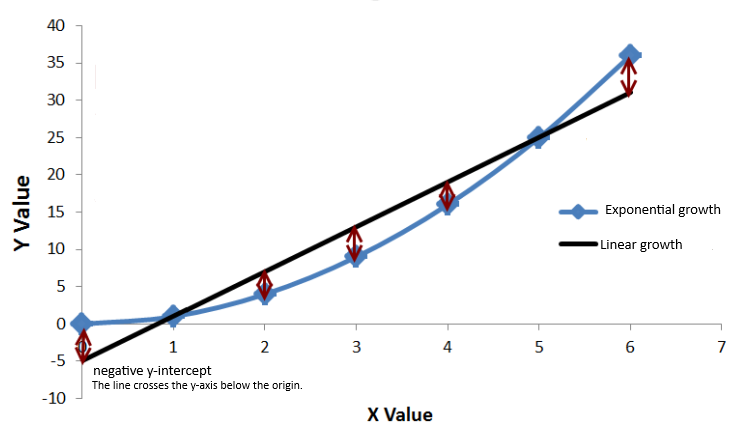

Chapter 3 Poisson Linear Regression
3.1 Overview
Poisson regression stands as a powerful method suited for the analysis of count data, focusing on modeling event occurrences typically expressed as whole numbers. Unlike standard linear regression, which deals with continuous data, Poisson regression is tailored for situations where the data mirrors a Poisson distribution. Therefore, values are counts of events within fixed temporal or spatial boundaries. In essence, this method is similar to standard linear regression, with the notable distinction that the dependent variable (y) represents the expected value of observed counts within a fixed frame.
3.2 Algorithmic Framework
3.2.1 Data Nature
In contrast to continuous variables, Poisson Distribution data points are restricted to non-negative integers, where (y) can only assume values of zero or greater. Illustratively, let’s take a practical look to the implementation of this idea, analysing the relation between the predictors carrier (airline names) (x) and flight arrival delay times (y) from the nycflights13 library.
## Min. 1st Qu. Median Mean 3rd Qu. Max.
## -59.000 -17.000 -4.000 -2.837 6.013 60.000The summary of the predictor arr_delay, reveals the challenge of converting its continuous variables into count data; through the segmentation of the values by intervals of time (from 0 to 60 minutes by steps of 3). Additionally, the median and mean reveals a prevalence of negative values deemed irrelavant for this study. They will be set to zero, despite the potential complications of getting an overabundance of zero-count entries in the prediction process.
Code Preview
intervals <- seq(0, upper_bound, by = 3) # 3-minute interval definition
# Discretize arrival delays into intervals, count occurrences and set negatives to zero.
delay_counts <- data_flight %>%
mutate(
arr_delay = ifelse(arr_delay < 0, 0, arr_delay), # Negative to zero
delay_interval = cut(arr_delay, breaks = intervals, include.lowest = TRUE))%>%
group_by(delay_interval, carrier)%>%
summarise(delay_count = n())## Occurences for interval [0,3]: 3104 In percentage: 62%Post-segmentation, a significant portion of the dataset falls within the 0 to 3-minute delay range, prompting a later scrutiny for potential model challenges. For the moment, let’s visualized the distribution of the newly generated count data across time intervals and carriers. This data is allocated to the predictor delay_count and will be used as the dependent variable of the model.
As for the independent variable, it’s evident from the plot that the values in carrier are nominal categorical. Which is okey, as independent variables can be of any type in Poisson Regression.
3.2.2 Regression equation
A few things can be derived from the assumption that the dependent variable in a Poisson-like distribution represent counts events occurring within a fixed boundary. For example, if those data points were to be represented in the Cartesian plane, they would also exist in a fixed space. In this scenario, a standard regression line, which may also predict negative values, is unsuitable for Poisson regression. Look at the example below:

Notice that the line representing linear growth can very easily go below the origin at any given point while the starting point of the exponential line remains fixed. A non-linear relationship, typified by an exponential line, proves better-suited for this model. Consequently, the concept of exponential growth is included within the model’s regression equation, where a logarithmic transformation withholds the relationship between the dependent variable and the independent variable with its coefficients. This ensures that the starting point of the exponential line never goes below zero. Also, the regression line becomes curved due to the natural logarithm’s application.
\[ y = e^{(\beta_0 + \beta_1x_1)} \quad\text{ or }\quad log(y) = \beta_0 + \beta_1x_1 \]
It’s essential to recognize that (y) symbolizes the incidence rate of an event per unit of exposure, rather than the count of observed events. Replaced by the symbol (λ) or notated along with y∼Poisson(λ), (y) is understood as a rate parameter. This idea is pivotal, as concepts like the mean and variance hinge on it. For instance, since (λ) denotes the average rate of event occurrences within a fixed interval, the mean (expected value) remains equivalent to (λ).Consequently, as the mean increases, the range of possible outcomes expands. In other wordds, the distribution’s variability increases, which emphasises the symmetrical association between the mean and the variance in Poisson Distribution.
\[ \lambda = e^{(\beta_0 + \beta_1x)} \quad \quad \text{or} \quad \quad y=e^{(\beta_0 + \beta_1x_1)} \quad y\sim Poisson(\lambda) \]
Elements of this equation, such as the rate parameter (λ) and the coefficients (β0, β1), are automatically calculated through the implementation of the function glm(..., family = "poisson"). Let’s fit the model:
Output
##
## Call:
## glm(formula = delay_count ~ carrier, family = "poisson", data = delay_counts)
##
## Coefficients:
## Estimate Std. Error z value Pr(>|z|)
## (Intercept) 2.67596 0.06019 44.456 < 2e-16 ***
## carrierAA 0.65624 0.07488 8.764 < 2e-16 ***
## carrierAS -2.27050 0.58048 -3.911 9.18e-05 ***
## carrierB6 1.03517 0.06961 14.871 < 2e-16 ***
## carrierDL 0.94437 0.07044 13.407 < 2e-16 ***
## carrierEV 0.99653 0.06996 14.245 < 2e-16 ***
## carrierF9 -1.98281 0.35864 -5.529 3.23e-08 ***
## carrierFL -1.12261 0.15118 -7.426 1.12e-13 ***
## carrierHA -1.42320 0.38273 -3.719 0.00020 ***
## carrierMQ 0.32227 0.07821 4.120 3.78e-05 ***
## carrierOO -2.67596 1.00181 -2.671 0.00756 **
## carrierUA 1.06646 0.06934 15.380 < 2e-16 ***
## carrierUS 0.25189 0.08347 3.018 0.00255 **
## carrierVX -0.61051 0.13307 -4.588 4.48e-06 ***
## carrierWN -0.21353 0.09646 -2.214 0.02686 *
## carrierYV -1.98281 0.41266 -4.805 1.55e-06 ***
## ---
## Signif. codes: 0 '***' 0.001 '**' 0.01 '*' 0.05 '.' 0.1 ' ' 1
##
## (Dispersion parameter for poisson family taken to be 1)
##
## Null deviance: 15842 on 199 degrees of freedom
## Residual deviance: 14100 on 184 degrees of freedom
## AIC: 14875
##
## Number of Fisher Scoring iterations: 7